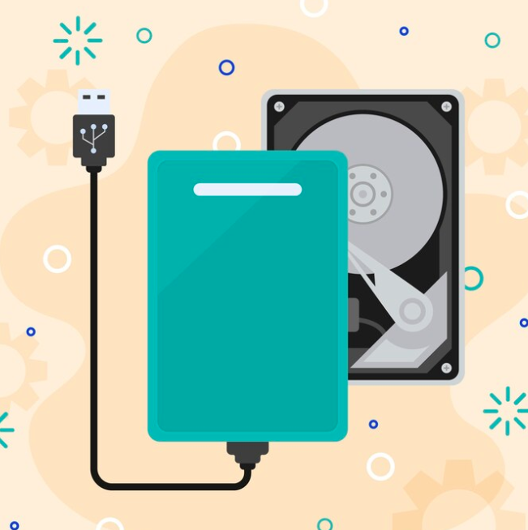

3 Uses for an External Hard Drive
An external hard drive is a hard disk drive (much like the one in your computer) that is placed externally, outside of the case. You can buy them pre-made, or purchase a hard drive and an enclosure, and make your own. They came in many sizes, are relatively inexpensive, and are well suited to perform various functions. In this article, I will detail 3 specific uses for your external hard drive.

For one reason or another, you may have chosen a computer whose storage capacity you've outgrown. It may be full to capacity with files and programs, and you need room to expand. So the first example is to use your external hard drive to add expandability to your computer. This is true in case all of your PC's hard drive bays are full, and especially if you have a laptop which has only one hard drive bay.
A second example is to use your external hard drive as a shared storage drive. You can attach it to a PC, set permissions and share-ability, and start saving, and sharing various files. For example, you can share and save pictures, MP3s, and video files. By using it in this manner, you'll be able to free up tons of space on your computer's local hard drive, and you'll be able to share files with everyone in your home network.
Another possible use for your external hard drive is to save important documents. For example, you can scan wills, deeds, insurance information, leases, bank account and credit information, and store them on your external hard drive. You can also take pictures of all your valuables, and keep these safe in your external hard drive for future reference. If it's important to you, then it's worthy of being saved in your external hard drive. You can then store this hard drive in a secure location such as a fire-proof safe, or a safety deposit box. This will surely save you tons of headaches in case of theft, or worse yet, a disaster.
There you have it. That's 3 possible uses for your external hard drive. They're versatile, and come in sizes that you can choose according to your specific needs. If you have a lot of files to save, then you can get a 500 GB hard drive, or larger if you wish. If you only have a few important documents to save, then maybe a 15 GB hard drive will suffice. The important thing is that it is you who can choose the size you need. It is you who can choose what its primary function will be. And if you need to, you can get more than one external hard drive. That's what makes them so ideal.